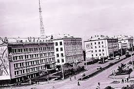
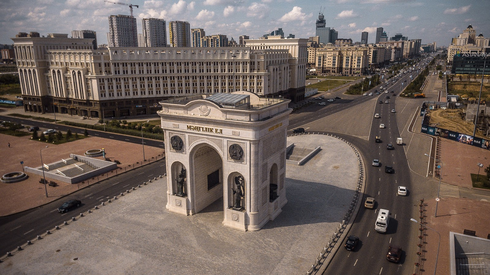

Nur-Sultan - the Capital City of Kazakhstan
The city lies on the banks of the Ishim River in the north-central part of Kazakhstan, within the Akmola Region, though administered as a city with special status separately from the rest of the region. A 2020 official estimate reported a population of 1,136,008 within the city limits, making it the second-largest city in the country, after Almaty, which had been the capital until
1997.
The city became the capital of Kazakhstan in 1997; since then it has grown and developed economically into one of the most modern cities in Central Asia. In 2021, the government selected Nur-Sultan as one of the 10 priority destinations for tourist development.
As of January 2020, the population of Nur-Sultan (Astana) is 1,136,008 which is over double the 2002 population of 493,000.
Ethnicity
As of 2018, ethnic Kazakhs made up 80.6 % of the city population, representing an increase from 17% during the country's independence.
Ethnic groups (2020):
Kazakh: 80.6%
Russian: 11.7%
Ukrainian: 1%
Tatar: 1.08%
Uzbek: 0.96%
Others: 4.65%
History
Retracted from: Britannica website
Emergence
It was founded in 1824 as a Russian military outpost and became an administrative centre in 1868. Its population had reached 33,000 when it was made an oblast (province) centre in 1939. The city’s importance was greatly enhanced during the Soviet period by the government’s Virgin and Idle Lands Campaign of the mid-1950s—Tselinograd was Russian for “City of the Virgin Lands”—and by the city’s role as capital of a kray (region) that united the five northern provinces of the Kazakh Soviet Socialist Republic in 1960–65. There was much new construction and the establishment of various research and higher educational institutions (teacher training, agriculture, medicine, and engineering and construction).

The City's Development after Independence
The city’s name was changed to Aqmola (“White Grave”) in 1992 following Kazakhstan’s independence. In 1994 the Kazakh government resolved to transfer the national capital from Almaty to Aqmola, a process completed in 1997, and the city’s name was again changed, to Astana (“Capital”), the following year. Kazakh Pres. Nursultan Nazarbayev spent vast sums of the country’s oil profits on a drastic expansion and reconstruction of Astana. The government hired Japanese architect Kurokawa Kishō to design the plan for Astana’s new broad avenues and blue-and-gold buildings, including the Presidential Palace. Nazarbayev also employed British architect Sir Norman Foster to design the new Palace of Peace and Reconciliation, a 203-foot- (62-metre-) high pyramid that includes, among other things, a library and an opera house. The city continued to develop rapidly throughout Nazarbayev’s presidency, and, on March 20, 2019, the day after he left office, the city was renamed Nur-Sultan in his honour.

Go back to Home Page